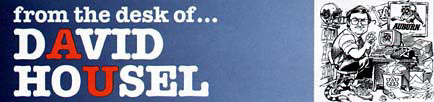

What follows is a report to the people, the Auburn people, shareholders and stakeholders in the success and progress of the Auburn Athletic Department, a state of the union report if you prefer that term. Success and Quality in the Athletics Department is measured in four areas: Competitive Success, Academic Success, Fiscal Responsibility and Rules Compliance. Here, point by point, is how we've done this past year. Competitive Success: We finished 23rd in the nation last year in competitive success as rated in competition for the Sears Cup, which is presented annually to the overall national champion in all sports. Auburn has made the Top 25 five out of the last six years and has been the highest rated school in Alabama four out of the last five years. We won two SEC championships, in men's swimming and in women's golf. Three of our teams, men's swimming, women's golf and men's track finished in the Top Six in the country. We had a good year, but there is still work to be done, goals to be met. Academic Success: Once again Auburn's overall graduation rate was one of the highest in the Southeastern Conference, 65 percent, equaling or surpassing the overall student graduation rate for the second year in a row. The overall student rate was 65 percent. The athletics graduation rate was 65 percent. Last year, our overall athletics graduation rate was 66 percent, the overall student rate 65 percent. Credit the good job being done by Virgil Starks and his academic support staff and the emphasis our coaches and student-athletes are placing on the importance of an education. Fiscal Responsibility: Once again, in a time when most major athletics departments are operating in the red, Auburn operated in the black, thanks in great degree to the fine work of Terry Windle, our chief financial officer and the vision and support of the Board of Trustees and the President. In spite of some difficult times, Auburn has operated in the black every year since 1994, a major accomplishment for any athletics department in this day and time. Rules Compliance: Another good year for Auburn. It was not a perfect year, but was a good year. There were no major violations-Auburn maintains a zero tolerance-for major violations, and secondary violations were processed in a prompt, routine manner that resulted in no serious penalties being imposed on the University. We did have to work through the Chris Porter situation, but that was an instance of a student-athlete making a bad decision. The University, as painful as it was, handled it in an appropriate manner, as expected and demanded by the NCAA. It was a good year. Not a perfect year and not a great year, but a good year, something to build on for the future. And what about that future? Over the next five years, Auburn will place greater emphasis on winning championships an graduating more student-athletes. We obviously need to improve on the football field, and we believe we are well on the way to doing that. Coach Tuberville and his staff will make us champions again, not as soon as we'd like-we'd like to be champions right now-but sooner than many people think, and a lot sooner than our opponents would like. We must continue to pay our bills and abide by the rules. There are no options or choices there. With the support and encouragement of the Board of Trustees and the President, we are putting together a facilities plan that will address most, if not all, of our facility needs within the next five years. Our goal, the Board's goal, and the President's goal, is to remove any excuses our coaches have for not being successful. We already made great progress toward that goal. Five years ago, many of our sports were not fully staffed, some of our teams were not at full scholarship limits, and our coaches were not being paid competitive salaries. That is no longer the case. All Auburn teams are fully staffed, fully scholarshipped, and our coaches are being paid competitive salaries. Auburn's competitive bonus policy is one of the most generous in the Southeastern Conference. We expect success, we are on the verge of demanding it, and we will reward it. Auburn's best days are just ahead. Thanks to the Board of Trustees, the President and most especially to you, the Auburn people. Get ready to yell, "War Eagle!" Get ready to yell it a lot.
© 1999 Auburn Network, Inc. |